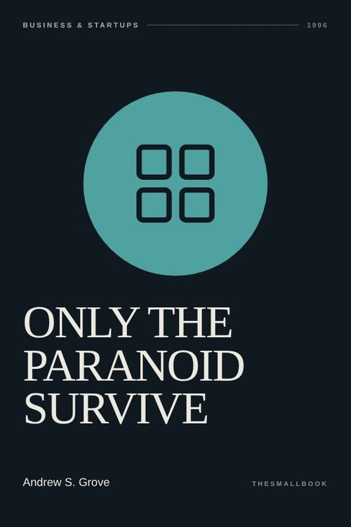

Why Did OceanGate Titan Fail?
'Safety Is Purely Dry' - Then the Ocean Voted
What happened
Stockton Rush built Titan with a carbon-fibre cylinder hull because titanium spheres were expensive, and he marketed the rejection of classification rules as innovation. His own director of marine operations flagged catastrophic flaws and was fired. The industry sent a letter in 2018 warning of 'catastrophic' outcomes. On 18 June 2023, at 3,300 metres en route to the Titanic, the hull gave way in milliseconds. Rush's own quote aged into epitaph: 'At some point, safety just is pure waste.'
The fatal mistake
Redefining 'innovation' as exemption from the standards written by everyone who had already died learning them - the certification he mocked was the cumulative autopsy of his predecessors.
The lesson
Rules in dangerous industries are encoded grief. Bypassing them is not disruption; it is spending other people's lives to relearn a lesson the industry already paid for.
The antidote book

Every business faces a moment when the rules change 10X. Spot it in the noise, act before it's obvious, or become a case study.
READ THE SUMMARY OPEN INTERACTIVE BOOKQuestions people ask about OceanGate Titan
Why did OceanGate Titan fail? Redefining 'innovation' as exemption from the standards written by everyone who had already died learning them - the certification he mocked was the cumulative autopsy of his predecessors.
How much was lost? Five lives, including the CEO; an industry of warnings ignored for five years
What is the lesson? Rules in dangerous industries are encoded grief. Bypassing them is not disruption; it is spending other people's lives to relearn a lesson the industry already paid for.
OceanGate Titan kyun fail hua? In simple English: Redefining 'innovation' as exemption from the standards written by everyone who had already died learning them - the certification he mocked was the cumulative autopsy of his predecessors. The cost was Five lives, including the CEO; an industry of warnings ignored for five years.
Keep digging
More ego failures · Open the full Graveyard
Read the antidote book summary: Only the Paranoid Survive
Related failures
- Why did Sita's Exile fail? ~5000 BCE (epic) · The Queen Who Was Sacrificed to Reputation
- Why did Sati's Sacrifice fail? ~5000 BCE (epic) · The Vow of Love That Became a Curse of Grief
- Why did Ravana fail? ~5000 BCE (epic) · The Scholar-King Whose Arrogance Cost Him an Empire
- Why did Dasharatha fail? ~5000 BCE (epic) · The King Destroyed by His Own Promise
- Why did Daksha's Yagna fail? ~5000 BCE (epic) · The Sacrifice That Ended in Destruction Because the Host Snubbed a Guest
- Why did Bhasmasur's Boon fail? ~5000 BCE (epic) · The Boon That Destroyed the Man Who Won It
Questions people ask about OceanGate Titan
Why did OceanGate Titan fail? Redefining 'innovation' as exemption from the standards written by everyone who had already died learning them - the certification he mocked was the cumulative autopsy of his predecessors.
How much was lost? Five lives, including the CEO; an industry of warnings ignored for five years
What is the lesson? Rules in dangerous industries are encoded grief. Bypassing them is not disruption; it is spending other people's lives to relearn a lesson the industry already paid for.
OceanGate Titan kyun fail hua? In simple English: Redefining 'innovation' as exemption from the standards written by everyone who had already died learning them - the certification he mocked was the cumulative autopsy of his predecessors. The cost was Five lives, including the CEO; an industry of warnings ignored for five years.
Keep digging
More ego failures · Open the full Graveyard
Read the antidote book summary: Only the Paranoid Survive
Related failures
- Why did Sita's Exile fail? ~5000 BCE (epic) · The Queen Who Was Sacrificed to Reputation
- Why did Sati's Sacrifice fail? ~5000 BCE (epic) · The Vow of Love That Became a Curse of Grief
- Why did Ravana fail? ~5000 BCE (epic) · The Scholar-King Whose Arrogance Cost Him an Empire
- Why did Dasharatha fail? ~5000 BCE (epic) · The King Destroyed by His Own Promise
- Why did Daksha's Yagna fail? ~5000 BCE (epic) · The Sacrifice That Ended in Destruction Because the Host Snubbed a Guest
- Why did Bhasmasur's Boon fail? ~5000 BCE (epic) · The Boon That Destroyed the Man Who Won It
They paid full price. You get the lesson in simple English.